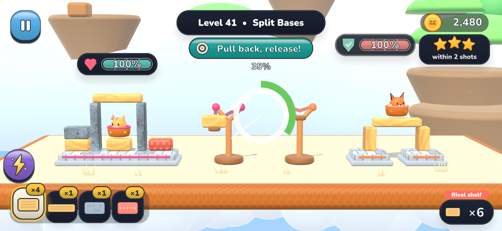
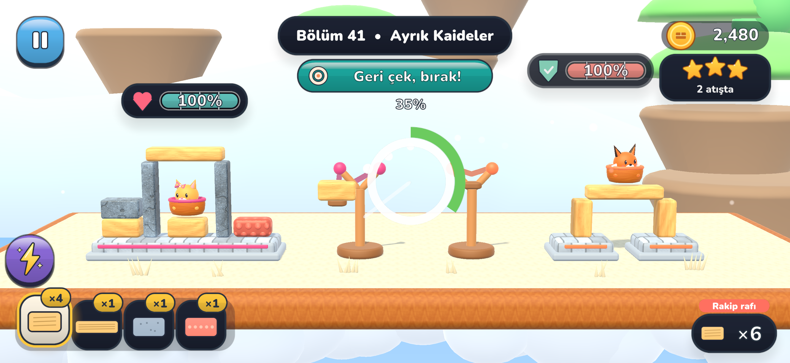

Simple to start.
Satisfying to master.
A gentle pull or a bold arc? Your angle, brick and timing turn a little fling into a clever win.
Pull back, let fly, and turn a tiny opening into a glorious tumble. Your fort is counting on you.
Coming to iPhone · Landscape play · iOS 15+
Heavy stone. Light wood. Bouncy rubber. Read the fort, pick your shot, and let physics do the rest.

A gentle pull or a bold arc? Your angle, brick and timing turn a little fling into a clever win.
Collect gold through play, upgrade your campaign fort, and find a look your mascot can call its own.
No ads or in-app purchases in this release. Play the campaign offline, in English or Turkish.
Geri çek, bırak ve minicik bir açıklığı görkemli bir yıkıma dönüştür. Kalen sana güveniyor.
Yakında iPhone’da · Yatay ekran · iOS 15+
Ağır taş. Hafif ahşap. Zıplayan kauçuk. Kaleyi incele, atışını seç, gerisini fiziğe bırak.

Hafif bir çekiş mi, yüksek bir yay mı? Açın, tuğlan ve zamanlaman küçük bir atışı akıllı bir zafere dönüştürür.
Oynayarak altın topla, kampanya kaleni güçlendir ve maskotuna kendine özgü bir görünüm kazandır.
Bu sürümde reklam ve uygulama içi satın alma yok. Kampanyayı çevrimdışı, Türkçe ya da İngilizce oyna.